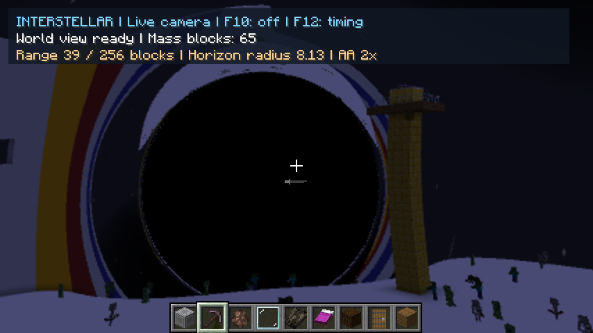
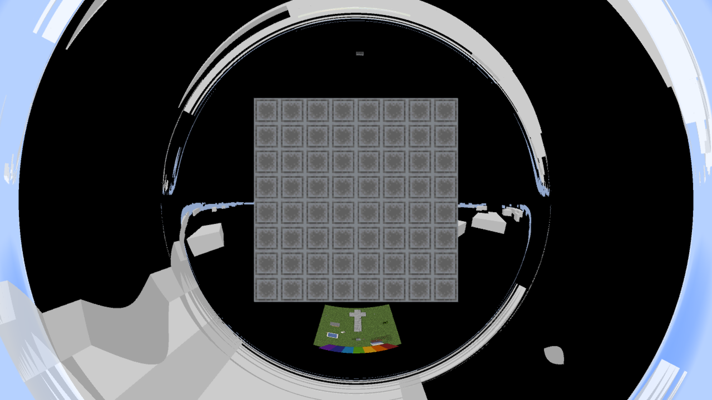
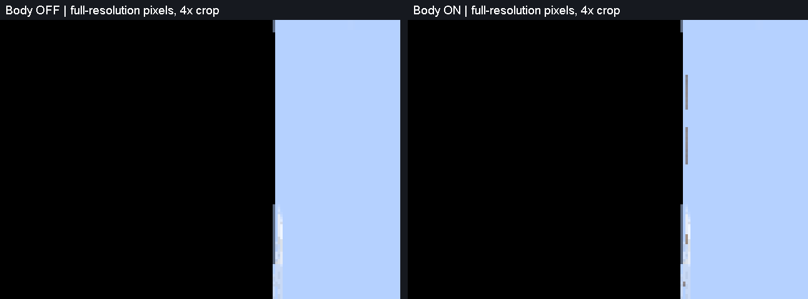

Follow one pixel from your eye, around a black hole, through a forest of triangles, and back to the colour on your screen.
This is the story of Interstellar's renderer: the physics it models, the Minecraft data it reuses, the GPU work it avoids, and the experiments that changed its design. It assumes you can reason about programs and data structures. No graphics background is required.
Read chapters 1–5, then follow the ray through 6–11. The terms in the later performance chapters will have something concrete attached to them.
Start at 5, then 8–10 and 12–16. The source map at the end points to the actual classes, shader functions and experiment reports.
Start with a dark, nonrotating black hole and an illuminated world around it. The hole does not paint a distortion onto the sky. It changes which paths can carry light to your eye. Your brain still interprets an arriving photon as coming from the direction in which it arrived. The source can therefore appear somewhere other than its ordinary Minecraft direction.
A mountain behind the hole may appear beside it. A suitably aligned building can spread into a ring. Two views of the same animal can arrive around opposite sides. Light passing very close to the critical orbit can go around extra times, producing successively thinner images near the dark region's edge. The bright details come from the surroundings: an isolated hole has no mandatory glowing rim.
Outside light can still reach you after you cross the event horizon. What changes is your ability to send a future signal back out. The view also depends on your velocity: a hovering observer and a falling observer at the same location do not assign the same directions to incoming light. This directional change is aberration. For a radial fall from rest very far away, the ideal Schwarzschild shadow is about 84 degrees across at the horizon; there is no universal full-sky blackout there. [2]
A distant observer watching an object fall sees another story. Later images arrive increasingly delayed, redshifted and dim. The object's own fall continues. A renderer that simply slows the entity's simulation is not reproducing that distinction: the physical motion and the received image have different jobs.
| Effect | What this build actually does | Status |
|---|---|---|
| Deflection, rings, multiple images | Numerically follows curved light paths through native scene geometry. | Implemented |
| Near-critical winding | Paths can make extra turns; thin images face finite sampling and iteration limits. | Implemented |
| View through the horizon | Uses a regular falling optical frame near the horizon, with an artificial transition from the exterior hovering frame. | Approximation |
| Ordinary Minecraft appearance | Reuses native geometry, textures, lighting, sky and supported material layers. | Implemented subset |
| Gravitational/Doppler colour and brightness | No physical spectral transport. The red/dim mob cue is stylized. | Not implemented |
| Light travel delays and horizon freezing | Rays see current terrain and current entity poses, not a history of emission events. | Deferred |
| Your own returning body image | Actual skin/model capture exists, but tests resolved strips rather than a recognisable head. Off by default. | Experimental opt-in |
| Accretion disk, spin, frame dragging | No disk emission model or Kerr spacetime. | Deferred |
| Physical destruction and infall of terrain | No terrain destruction or collapse. Mass blocks become editable inside the horizon through an explicit gameplay overlay. | Not simulated |
Current support and exclusions: Minecraft coverage, horizon/body study. A larger black hole mainly changes spatial and time scales. At equal radius measured in horizon radii, with a proportionally scaled scene and the same observer state, the nonrotating lens has the same dimensionless geometry.
A Minecraft block is not sent to the GPU as “a stone block.” Its visible surfaces become a mesh: vertices connected into triangles. A vertex contains a position and attributes such as texture coordinates and colour. A quad is normally two triangles sharing a diagonal. Stairs, plants, chests and mobs have their own arrangements of surfaces.
| Term | A useful software-engineering picture |
|---|---|
| Vertex shader | A small GPU program applied to vertices. Common work: convert a model-space position into clip space using camera matrices. |
| Fragment shader | A GPU program that computes output for a rasterized sample location. It can be a texture lookup—or, here, an entire curved-ray simulation. |
| Texture / sampler | A GPU-resident array plus rules for reading it. A texture may contain an image, but this renderer also puts geometry and tree nodes in textures. |
| UV coordinates | Addresses within a surface's texture. They say which piece of a stone, skin or font image belongs at the hit point. |
| Texture atlas | Many small images packed into one large texture, so many different surfaces can share one binding. |
| Framebuffer / render target | The destination array for a draw. It can be the screen or an intermediate image consumed by another shader. |
| Depth buffer | A record of straight-camera depth used by ordinary rendering to keep nearer surfaces in front. It does not describe visibility along a ray that loops around a hole. |
| Uniform | A value shared by a draw: camera position, horizon radius, a texture binding or a quality setting. |
| Draw call / pass | A submission of geometry and shader state. A pass often writes an intermediate image for the next step. |
Instead of asking ordinary rasterization to project every world triangle along a straight view, the mod draws a screen-covering primitive. Its fragment shader constructs a viewing ray for each sample and searches the world itself. Rasterization provides the grid of invocations; ray tracing decides their colours.
This is still GPU work. “Software ray tracing” here means the intersection algorithm runs in programmable shader instructions, not that Java is tracing millions of rays on the CPU. The CPU prepares the scene and submits work. The dedicated RT cores in an RTX card are a separate facility that the current OpenGL path does not use.
GPUs execute many invocations in groups. Neighbouring pixels usually benefit from doing similar work. If one ray finishes immediately and another spends a long time circling the hole, their work is uneven. Each invocation also needs temporary storage for positions, directions, hit state and accumulated colour. A program with more live state can limit how much other work the GPU can keep active.
That is why “fewer draw calls” and “fewer arithmetic operations” are incomplete performance rules. They matter, but so do memory access, divergent paths and the shape of the compiled shader. Our experiments repeatedly had to measure the actual executable.
It is tempting to render Minecraft normally, then bend its screen image near the hole. That can work as a limited visual effect. It cannot supply a surface that the original camera did not see. A ray can bend behind a wall, approach a tree from the other side, or return toward the player. None of those colours is necessarily present in the original screenshot.
Early integration kept distant scenery unbent behind the lensed region. The coloured wall then appeared partly bent and partly straight, sometimes duplicated. The problem was not merely a rough seam. Two incompatible visibility rules were describing the same world.
The project also tried simpler representations for distant terrain, including column/height-field views and captured face appearance. These were useful stepping stones, but native Minecraft blocks are not just opaque axis-aligned cubes: overhangs, thin surfaces, vegetation, fluids and model-specific lighting matter. Matching a silhouette while approximating all those details can still make a mountain look conspicuously wrong.
Minecraft supplies the geometry and appearance; Interstellar supplies curved visibility. We capture what native model renderers emit: the actual triangles, texture coordinates, per-vertex tint, ambient occlusion and lightmap coordinates. After a curved ray finds a triangle, those same attributes determine its colour. This reuses Minecraft's visual decisions without asking its ordinary straight-camera depth buffer to answer a different visibility problem.

The configured FOV was 70°, but a recorded Minecraft projection corresponded to an effective 77° vertical FOV. Reconstructing rays from the actual projection matrix removed a visible viewport-size mismatch. The settings label was not the final camera.
Native lightmap sampling, interpolation and sky render state mattered. Incorrect half-texel treatment and render-state assumptions could shift brightness or leave the sky wrong. These had to be fixed separately from the ray equations.
Fog remains an appearance convention too. The renderer follows Minecraft's fog inputs and distance policy rather than pretending fog is a physically integrated atmosphere along every curved path. Native-looking and fully radiometrically accurate are different objectives.
Evidence: appearance and projection recovery, native mesh transition, entity/lightmap integration, fog.
Mass blocks define a spherical optical proxy. Equal block masses give a mean centre; the furthest block corners determine an enclosing radius. The reference 4×4×4 cube reaches the proxy horizon threshold. Smaller compact builds use an extended-body optical model so they can bend light without immediately becoming a black hole.
This is not a solver for the spacetime of an arbitrary pile of cubes. The exterior is treated spherically. The extended-source interior uses a finite, chosen metric model matched to that exterior. Pressure, material strength, realistic collapse, binding energy and combined strong-field multi-hole gravity are absent.
Entity motion uses a separate, scaled Newtonian gameplay force, now with strength 0.2 per block, plus vanilla drag, downward gravity and collisions. That produces readable arrow curves and mob capture. It does not make the arrows timelike geodesics of the optical spacetime. Changing gameplay strength does not change the lens.
Code: TerrainScreen, source discovery, extended source and gameplay model. The legacy exhibit retains its historical calibration; current gameplay cubes use rₛ per block = √3/32.
Imagine sampling the centre of a pixel. The camera projection converts that screen location into a 3D direction. Move the sample a quarter of a pixel diagonally and you get the slightly different direction used by one of our AA samples. The ray starts at the camera and is followed backward toward whatever could send light to it.
For a nonrotating spherical source, the camera position, source centre and initial direction define a plane. The whole photon orbit stays in that plane. We can therefore integrate a two-dimensional radial orbit, then reconstruct 3D positions for scene intersections. The scene itself is still fully three-dimensional.
The state is compact: inverse radius and its rate of change with orbital angle. Using inverse radius makes the Schwarzschild null-orbit equation especially simple. “Null” means a lightlike path; it does not mean an empty or missing ray.
With u = rₛ/r, and primes meaning derivatives with respect to the orbit angle φ:
The numerical state is the pair (u, u′). Its invariant, u′² + u² − u³, is useful for testing. The observer frame determines the initial state. The shader reconstructs position using the radial and tangential basis vectors of the orbit plane. You do not need to manipulate this equation to understand the rest of the pipeline.
A nearly radial ray needs separate handling because the plane's tangential direction becomes poorly defined. Similarly, a ray with no bending can use a straight segment. These special cases avoid dividing by nearly zero quantities and avoid doing unnecessary orbit integration.
Implementation: terrain_shared.glsl, trace / derivative. Derivation and conventions: science notes, [3]. The finite Minecraft embedding is an explicit approximation: block coordinates are treated as positions in this chosen spatial representation.
The shader uses fourth-order Runge–Kutta integration, usually abbreviated RK4. In each step it evaluates how the state changes at four trial positions, then combines those evaluations. You can picture it checking the slope near the start, middle and end before committing to the next point. It is more accurate than repeatedly extending only the starting tangent.
But integration alone does not tell us what the ray sees. Between consecutive curve points, we test a straight chord against scene geometry. A chord that is too long can cut across a curved path and hit the wrong face—or miss a face the curve would reach. Tiny fixed steps everywhere would reduce that error but waste enormous work in weakly curved regions.
Those millimetre values describe a local heuristic in the renderer's coordinate embedding. They are not a proven bound on the final pixel error, accumulated orbit error or error near every possible grazing surface. Minimum step limits and finite precision also matter. Independent numerical and image checks constrain where the policy is accepted.
Raising the spatial cap from 4 to 16 blocks reduced measured GPU p95 time by about 21% in the tested wall and downward views. Geometry was still tested along every chord. Raising it again to 32 bought only about another 2% in the downward view, so the more conservative 16-block cap stayed.
On an outgoing ray, inverse radius u approaches zero. A step estimated from its starting point could jump past zero and return sky before checking intervening terrain. Bounding the fractional decrease of u kept a finite chord available for intersection. The visible rings were a numerical termination error, not a new physical lensing effect.
There is also a final sky approximation. Once a ray is outgoing beyond a sphere enclosing the captured geometry, no retained surface remains to be hit. The native mesh path samples the sky using the outgoing tangent there; it does not integrate an exact remaining asymptotic sky direction to infinity. This finite exit is one of the residual optical approximations.
Evidence: curvature derivation, 4/16/32 comparison, near/far policy and regressions, small-source ring correction.
A natural-world capture has contained more than six million terrain triangles. Testing all of them for every chord of every sample would be hopeless. The main acceleration structure is a bounding volume hierarchy, or BVH: a tree whose boxes enclose progressively smaller groups of surfaces. If the chord misses a parent box, it cannot hit anything inside that subtree. [4]
The CPU computes bounds, chooses the longest axis, and partitions primitive centroids around the box midpoint. If that produces an empty side, it falls back to splitting the count. Leaves contain up to four terrain quads or eight moving triangles under ordinary subdivision. A depth guard can produce an oversized leaf; the storage format has an explicit overflow representation for it.
This is a straightforward builder, not a globally optimal tree. The more expensive surface-area heuristic was tested earlier: it tries to choose splits that reduce expected traversal work. In that experiment the modest rendering benefit did not justify much slower construction. For a world that changes while you play, build cost is part of the algorithm's cost.
A recursive CPU implementation would keep a stack of nodes to return to. Our GPU format flattens the tree in preorder and stores an escape index. Missing a node jumps directly past its entire subtree. Entering an internal node advances into its children. This keeps traversal state small and makes the memory representation predictable.
The box test is the slab method. Each coordinate axis gives an interval along the segment where it lies inside that axis's bounds. Intersect the three intervals. If there is no common interval, the segment misses the box. The fast path computes reciprocal segment directions once and uses vector operations, with explicit treatment for directions parallel to a box face.
At a leaf, a Möller–Trumbore-style triangle test computes distance along the chord and barycentric weights. These weights say how much each corner contributes to the hit. The renderer keeps the nearest accepted hit across terrain, actors and clouds. A farther hit tightens nothing; a nearer one shortens the remaining box-search interval.
“Accepted” is important. A ray may geometrically hit a leaf texture's quad but pass through a transparent texel. Back-face rules also differ between terrain and two-sided materials. The shader cannot blindly stop at the first geometric triangle.
Successive chords of the same curved ray are often nearby. After a fully empty traversal, the shader can construct a conservative empty box around the starting point from the rejected subtrees' separating planes. If a later chord's endpoints both remain inside that box, the whole straight chord stays inside it: boxes are convex. That search can be skipped.
The certificate is valid only if traversal finishes in a state that actually proves emptiness. Entering an unresolved leaf prevents caching. Terrain and moving searches have separate state, reset for every ray and AA sample. We do not reuse last frame's empty space after a mob moves into it.
Code: MeshTree, meshSegment. Contrast accepted empty-region query caching with the rejected longer-empty-step experiment.
The first convincing native-mesh view was expensive to prepare. That does not mean every frame recaptures the entire world. The current live renderer splits the scene by how it changes.
| Scene part | Lifetime and update policy |
|---|---|
| Terrain chunks | Retained mesh and local BVH. Replace affected chunks after block/light or load/unload invalidation. Keep overlapping chunks while the camera moves. |
| Actors and block entities | Capture supported native renderers with their current pose. Rebuild/update their moving geometry each live frame. |
| Clouds | Native cloud faces are finite geometry. They have an independent root within the moving forest and retain native nearest-layer semantics. |
| Sky | Six 256×256 native directional captures packed side by side. Reuse for a short interval when position/time permit. |
| Source metadata | Updated independently from terrain. A changed mass/centre does not require rebuilding the whole scene. |
Capturing chunk models is sliced into bounded work periods so preparation can progress without doing an entire natural-world capture in one frame. Dirty events coalesce. A revision number catches changes during capture: publishing a mesh that was already stale before it finished would create an avoidable consistency problem.
GPU geometry lives in row-aligned arenas. A replacement receives new space, is uploaded, and becomes reachable through the published pointers before old allocations are reused. Adjacent free row ranges coalesce. CPU capture arrays can be released after publication. Geometry budgets, render-distance bounds and allocation failures are explicit; the system does not quietly claim to contain the infinite Minecraft world.
A small top-level BVH identifies promising chunks. A child reference enters that chunk's local BVH, and traversal returns through the stored escape route. This costs more indexing than one ideal monolithic frozen tree, but makes live replacement practical. The project checked a monolithic and chunked capture at the same frozen pose and obtained identical candidate images in that comparison.
They have different spatial distributions and different composition rules. A cloud layer spans a huge region; a mob is small and local. Combining their bounds made some searches do unnecessary work. The accepted implementation has independent actor/cloud roots but traverses them in the existing moving-tree loop, sharing a conservative empty-region cache. After the nearest cloud layer contributes, its entire remaining tree can be skipped.
In a controlled demanding view, that reduced moving-node visits by about 58%, but GPU time by only 4%. Terrain work was unchanged, and many cloud triangle tests remained. This is a useful reminder: a dramatic reduction in one counter is not the same as a dramatic reduction in frame time.
The first split-tree variants had less convincing timings. Removing the cloud cache did not win; maintaining three independent cached searches also had costs. The retained variant kept separate spatial roots while sharing the established moving cache. The details of the traversal state mattered as much as the high-level idea “split the tree.”
Moving uploads reuse texture allocations and staging buffers, growing capacity when needed and updating existing storage in ordinary frames. That avoids repeated allocation churn. It does not mean moving trees are refitted or cached between poses: their rebuild is still a known CPU cost and a candidate for future work.
Current mechanics: StreamingTerrain, ReusableMeshTexture. Historical experiments: streaming, moving trees. Some older reports contain superseded range/feature limits; the current range is 256 blocks from the selected source.
Once we know which triangle is visible, its three corners supply barycentric weights. These interpolate texture UVs and appearance attributes. The shader samples the correct native atlas and combines the texture with the captured vertex colour and native lightmap contribution.
This preserves details that are easy to underestimate: biome tint, face-dependent shading, corner ambient occlusion, model offsets, texture orientation, block light, sky light and the exact diagonal used by the native triangles. The black hole changes where the surface is seen; it does not require inventing a new lighting model for every block.
Minecraft darkens some corners near neighbouring geometry. Those per-corner values are part of the native appearance. Losing them can make terrain look flat even when the ray hits the correct block.
A small lookup texture converts lighting coordinates into the game's current illumination. Its sampling and interpolation conventions matter, especially when daylight, darkness or effects change.
The sky can be captured in six directions because it acts as a distant background for this approximation. An outgoing ray chooses a direction in those captures. Terrain cannot be treated the same way: it has finite depth, occlusion and parallax. Clouds also need finite geometry for useful depth ordering, so the accepted native mesh path represents them separately.
Sky captures call Minecraft's renderer with the necessary matrices and state, rather than approximating its colours from scratch. The code restores projection, framebuffer, fog, blending, depth and scissor state afterwards. A rendering helper that leaves one of those states wrong can corrupt a later pass even when its own output looks fine.
The lensed world is composed before Minecraft's first-person hands/items. An earlier composition point overwrote them. Moving the world composition into the correct render stage restored native hands, item-use animation and foreground overlays. That was a render-order bug, not an inability of the lensing equation to handle a hand.
The player's returning body is a different feature: it belongs in world geometry but must not form a shell immediately around the camera. Those triangles are tagged and considered only after enough angular winding. That is separate from the ordinary hands you see while holding a bow.
Code: WorldMesh, EntityMesh, NativeSky, world-feature integration.
An opaque stone hit is straightforward: shade it and finish. A leaf quad may have transparent holes. Stained glass reveals another surface behind it. A cloud should contribute its nearest native layer once, not darken the image every time the ray encounters another face of the same cloud volume. Enchantment glint and emissive eyes have different blending rules again.
The full material path accumulates supported transparent layers front-to-back. It tracks how much of the background remains visible and stops when little remains. After a transparent hit, it resumes the rest of the same chord; recomputing the next optical step from there would change the intended path and waste work. A 32-layer budget bounds pathological stacks.
This is an approximation of Minecraft's surface blending, not a physical volume renderer. Water does not refract the ray with Snell's law, and a glass block does not acquire a measured wavelength-dependent absorption spectrum. Native look was the immediate integration target.
The ordinary probe shader resolves simple rays and marks samples needing full composition. A separate mask is copied to avoid reading and writing the same framebuffer attachment unsafely. A later pass retraces only marked samples with the larger material program. We pay for some duplicate tracing, but most opaque samples avoid carrying all the composition state.
Transparency percentage alone does not predict cost. In one profiled downward view, only 739 of 1,843,200 AA rays required the material pass—0.040%—yet that stage took about 3.4 ms. Sparse, difficult work can still be expensive. A future compacted work queue might help, but the measured stage cost is not a promise that all of it is removable.
A tiny nudge along the ray direction can round back onto the same surface at grazing incidence. The fix nudges across the surface normal with a coordinate-scaled margin. Near-coplanar geometry is a numerical problem even when the underlying optics are unchanged.
Particles, portal surfaces, beacon beams, arbitrary shader-pack layers and several special overlays remain incomplete or unsupported. A feature list is more honest than claiming the mod simply supports “all native rendering.”
Evidence: material pipeline, feature measurements, current exclusions.
A pixel covers an area, but a single ray samples only one direction. A thin image near the hole can slip between sample locations, appear jagged, or change abruptly as the camera moves. Antialiasing tries to represent that area more faithfully.
The default traces two diagonal subpixel samples at offsets (−¼,−¼) and (+¼,+¼) in each internal pixel. At 2560×1440 output and half scale, the logical trace grid is 1280×720: 921,600 internal pixels and 1,843,200 traced samples. This is still less information than a full-resolution, densely sampled image.
The earlier EDGE mode smoothed the already-rendered image. That is cheap, but it cannot discover detail that was never sampled. It also softens texture contrast. The user noticed the blur, so that mode remains optional rather than the default.
The current output reconstruction is a bounded cubic filter. It uses a 4×4 neighbourhood for a sharper interpolation, then clamps the result to the local central colour range to prevent new bright/dark overshoot around an edge. It is reconstruction, not super-resolution; it cannot reliably recover a one-pixel returning head image that the traced samples missed.
Originally, one fragment invocation traced both AA rays. Splitting them into two shorter draws was much faster in controlled tests, even though the optical work, sample count and final image were unchanged. Each draw writes one half of an RGBA32F target. A small fold pass averages the samples before the ordinary output conversion and reconstruction.
In the original split-AA experiment, wall GPU median fell from 30.571 to 20.180 ms and the downward view from 45.624 to 32.920 ms. These are roughly 34% and 28% less GPU time in those historical scenes. They are not additional gains you can apply again to today's FPS.
A plausible explanation is that the shorter shader allows better scheduling and less simultaneously live state. We did not collect the low-level register/occupancy evidence needed to claim that mechanism as established. The image equality and speed measurements are the facts; the compiler explanation remains an interpretation.
Evidence: AA choices, split scheduling. Implementation: TerrainSamples, terrain_resolve.fsh.
After reducing unnecessary curve steps and searches, a large amount of time remained in fetching and interpreting scene data. Several useful changes made that same work cheaper without reducing geometry coverage or the number of AA samples.
Each captured vertex has twelve floats: position/material metadata, texture/light coordinates and RGBA. Two independent triangles store six vertex records, even though a native quad has only four distinct corners. The accepted terrain format stores four and reconstructs the original two triangle tests.
That saves one third of the vertex payload, but it does not halve intersection tests. The native diagonal and triangle interpolation remain, including nonplanar cases. A rectangle intersection with bilinear lighting would be a different renderer. Before packing, duplicated corners must agree bit-for-bit.
The quad grouping also changes BVH leaf layout. A measured heavy view improved by about 4–5% in the controlled storage experiment, while an easier view could regress slightly. The owner accepted that tradeoff. Production cleanup removed duplicate reference storage; the experiment's temporarily doubled representations were not a memory saving by themselves.
The tree's minimum and maximum coordinates stay 32-bit floats. Escape and leaf information are packed so an ordinary node needs two texture fetches instead of three. Integer bits are carried in a normal finite float and recovered with bit reinterpretation; special kinds encode child-tree jumps and oversized leaves.
This is exact metadata packing, not lower-precision geometry. It is distinct from the later quantized bounds experiment, which changed bounds and lost performance. Reducing fetch count also does not automatically reduce total reserved VRAM when the surrounding arena layout stays fixed.
The older triangle arena width, 4095 texels, is divisible by the nine texels in a triangle. A triangle therefore cannot straddle a row. Its row quotient and remainder can be computed once and reused for all attribute fetches. Current quad rows use 4092 texels, divisible by the twelve texels in a quad. Moving triangle textures use their own layout and retain the addressing they need.
The ordinary streamed shader also knows those widths at compile time. That avoids repeatedly querying texture sizes and branching between layouts during a hot intersection loop. The row-address simplification was small—about 2.3–2.4% in its repeated demanding-view experiment—but simple enough to keep.
The shared shader supports many diagnostic and historical modes. The normal live configuration fixes choices such as two-ray AA, adaptive stepping, compact bounds and ordinary native mesh behavior. Separate compiled variants make those choices constants so the compiler can eliminate irrelevant branches and state. Unusual settings retain fallback programs.
In the historical specialization test, identical same-frame images accompanied about 16–18% lower GPU p95 time. No field of view, geometry, sample count or resolution was reduced. A larger shader with a uniform set to “off” is not necessarily equivalent in cost to a shader where that feature's code is absent.
Evidence: quad storage, compact nodes, known layouts, row reuse, live specialization. Historical timings describe different checkpoints; do not multiply their percentage gains together.
This is the compact inventory of the important retained techniques. The preceding chapters explain how they fit together. “Exact” here means intended to preserve the relevant representation or image semantics; floating-point ordering and equal-depth ties still need checks.
| Technique | Work avoided | Tradeoff / boundary |
|---|---|---|
| Planar inverse-radius orbit | General 3D photon integration for a spherical source. | Depends on Schwarzschild symmetry; not a Kerr solver. |
| Adaptive chords and 16-block cap | Excess steps/intersections in weak curvature. | Numerical heuristic; near-critical and close-view guards retained. |
| Near/far quality policy on CPU | Overly fine ordinary distant paths; repeated per-ray policy calculation. | Small measured image differences accepted; close views stay conservative. |
| BVH + nearest-hit pruning | Most triangle tests. | Tree construction, node traffic, possible poor bounds. |
| Stackless escape links | Explicit traversal stack/state. | Fixed traversal order is not always the ideal near-first order. |
| Vectorized bounds / staged attribute fetch | Repeated axis bookkeeping and attribute reads for obviously missed candidates. | Parallel rays and native material acceptance must remain correct. |
| Per-ray empty-region cache | Repeated traversals through already-certified empty space. | Conservative proof required; reset for every sample. |
| Retained chunk meshes + top-level index | Full-world recapture on ordinary edits/movement. | Queued, individually atomic updates; finite coverage and memory. |
| Separate actor/cloud roots | Unhelpful overlap and searches after cloud consumption. | Cache design matters; moving trees still rebuild. |
| Reused moving buffers/textures | Repeated allocations and capacity churn. | Does not eliminate capture, construction or upload work. |
| Shared quad vertices | Duplicate corner payload and some associated memory traffic. | Two triangle tests retained; tree grouping changes. |
| Compact exact node metadata | One ordinary node fetch and unpacking overhead. | Pointer/kind limits and overflow cases need explicit handling. |
| Fixed layout + row-address reuse | Repeated dimension branches and integer addressing. | Only selected when the actual storage layout matches. |
| Compile-time live variants | Unused diagnostic/general-mode code in common draws. | More shader programs and startup compilation; fallback coverage matters. |
| Selective material retrace | Full composition state for every opaque ray. | Some rays retrace; sparse expensive tails remain. |
| Half-scale trace + two real samples | Full-output-resolution tracing cost. | A deliberate sampling compromise; thin detail can still alias. |
| Separate AA draws + float fold | Cost of the larger serial two-ray executable. | Extra target/pass; mechanism not established by hardware profiling. |
| Cached native sky + conditional effects | Unnecessary sky captures and absent-effect passes. | Finite sky resolution/update interval; Glowing still costs an extra pass when present. |
| Experiment | What happened | What we learned |
|---|---|---|
| Longer steps only in certified empty space | Almost identical images, but about 2.5% slower GPU p95 than the separately compiled original. | Extra bound calculations and shader complexity can outweigh fewer searches. An off-toggle inside a modified shader was a misleading baseline. |
| More elaborate terrain splitting (SAH) | Only a small rendering benefit, with substantially greater capture/build cost. | The best static tree need not be the best live-world pipeline. |
| Shade only the final winning hit | The tested variant did not produce a worthwhile retained gain. | Alpha rejection and material rules constrain how far shading can be deferred. |
| Native cloud quads / rectangular intersection | Tested variants effectively tied or failed to beat the retained renderer. | A simpler primitive on paper may create less favourable GPU code or memory behavior. |
| Per-actor hierarchy | Heavy-view medians differed by about 0.03%—a tie. | The accepted actor/cloud split had already removed much of the targeted work. |
| Conservatively quantized BVH bounds | The tested layout took about 20% more heavy-view GPU time despite correct paired images. | Wider conservative bounds increase false-positive traversal; packing/unpacking is not free. |
| Cheap edge smoothing as default AA | The user found it blurry. | A lower pixel error metric can reward blur. Image metrics need perceptual review. |
These are conclusions about the implementations and scenes that were tested, not impossibility results. A different layout, compiler, GPU or scene could change the answer. Rejected branches were preserved so their ideas and evidence are not lost.
Reports: empty steps, SAH, final-hit shading, clouds, actor hierarchy, quantization, four-experiment decision record.
The old exterior initialization assumed a hovering observer. It contains a factor based on √(1−rₛ/r), which ceases to describe a physical hovering camera at the horizon. Simply removing the close-distance guard would feed invalid initial conditions into an otherwise good ray integrator.
The current near-horizon programs use a regular falling-frame initialization derived from the project's Painlevé–Gullstrand model. Outside 1.25 rₛ the view remains static; between 1.25 and 1.05 rₛ it blends into radial free fall from rest at infinity; closer in it uses that falling optical frame. Minecraft player velocity is not the input to this transition.
Inside the horizon, source mass blocks and their selection/mining layers receive a separate straight-aim editing pass. The curved scene excludes those same interior tagged surfaces so they are not duplicated. Other scenery remains on the curved path. At or below 0.1 rₛ, the background is explicitly darkened to bound central singular calculations while editing stays available.

Returning light is a legitimate optical possibility. The implementation captures the actual player skin/model and tags its geometry so it is ignored until a ray has wound sufficiently far. It uses the current pose, with no past-pose history. That last distinction matters if the player moves while light is travelling.
We tested an eight-times-larger horizon, calculated return directions, full trace resolution and native spyglass zoom, including an isolated source. The differences were real but mostly narrow, heavily distorted strips—not a recognisable image of a head. Merely enlarging the black hole did not solve the recognisability problem.

Body capture therefore defaults off, while an experimental command keeps it available. In an earlier matched demo fixture, body-on/off frame medians were about 21.60/19.34 ms. Paying measurable cost for an image the player cannot recognise did not satisfy the feature's purpose.
There is no singularity model, physical interior terrain support, delayed emission history, complete spectral transport or player-speed relativity feature. The current crossing is a useful exploration mode with a documented observer assumption, not a complete worldline simulation.
Derivation and evidence: free-fall model, horizon/body study, body performance comparison.
“The shader is expensive” was not specific enough. We needed to distinguish orbit integration, tree traversal, primitive tests, material work, CPU construction and frame scheduling. The profiler added stage timers, work counters and a separate Java Flight Recorder capture. Counters and readbacks were kept out of normal timed runs.
| One historical heavy-view probe | Mean per AA ray | Across both samples at 1440p / half scale |
|---|---|---|
| Optical integration steps | 52.21 | About 96 million steps |
| Terrain BVH node visits | 242.64 | About 447 million visits |
| Moving BVH node visits | 116.50 | About 215 million visits |
| Terrain triangle entries | 4.50 | About 8.3 million entries |
| Cloud triangle entries | 35.31 | About 65 million entries |
The faster wall view actually averaged more optical steps—about 57. More integration steps could not explain why the downward view was slower. Scene intersections were the stronger lead. Later tree changes altered these counts, so this table is the evidence that motivated work, not a claim about today's exact frame.
Temporarily omitting all moving geometry reduced one heavy GPU pass from about 27.2 to 15.9 ms. Omitting only clouds or only actors saved less, and those savings did not add up to the complete removal. The features share traversal and interact with program execution. You cannot sum isolated removal timings and call the result a forecast.
Java profiling also identified moving-tree construction at about 5.9 ms in that scene. Much of it overlapped GPU work. Removing 5.9 ms of CPU work would not automatically subtract 5.9 ms from the displayed frame interval. CPU and GPU form a pipeline, not one strictly serial stopwatch.
The current small arrow exhibit measured about 51 FPS at 1440p, while a huge close-hole view measured about 18 FPS in its separate study. Neither number replaces the original natural-world stress scene. A faster result from fewer triangles or a different camera is not an optimization of the old workload.
Similarly, a 10% decrease in time means about an 11.1% increase in reciprocal throughput, not exactly 10%. We report which quantity changed. Percentages from different checkpoints cannot be stacked into a meaningful total.
Detailed methodology and raw data: profiling report, current small demo sample, large-hole sample.
A screenshot can expose a broken wall or a white mountain. It cannot establish that the capture boundary is physically right, or that a rare grazing ray does not tunnel through terrain. Conversely, passing numerical fixtures can miss a render-state error that makes the actual sky black. Both kinds of evidence are needed.
The last horizon verification recorded 52,480 optical comparisons, 156 material cases and 945 horizon cases. The horizon set included 810 sky-ray comparisons and 135 explicit central-cutoff checks. These are finite sampled checks. They are not a theorem about every ray or every Minecraft model.
Comparing a lensed image against vanilla mixes appearance error with the intended displacement caused by gravity. A mountain can have the right colour and shading but different pixel locations. For appearance recovery, zero-bending native comparisons were much more informative. For AA, a higher-sample same-model reference is useful—but it still shares the same model assumptions.
Whole-image mean error can also hide a small important region: a photon-ring edge, thin returning image or translucent boundary. We therefore used regional comparisons and occasional visual inspection. A blur filter can lower an error score while making the image less satisfying; the user's AA feedback caught exactly that kind of tradeoff.
A diagnostic variant may expose switches that the optimized live program compiles away. Passing the diagnostic fixture tests shared equations and a particular implementation path; it does not automatically certify every specialized executable. Same-frame output and actual runtime checks cover that gap.
References: independent finite-surface solver, critical directions, horizon checks, image reference strategy.
The dedicated RT hardware accelerates traversal of its acceleration structures and supported primitive intersections. It does not solve the Schwarzschild differential equation for us. The opportunity is to keep computing curved paths and ask the hardware to intersect their straight segments. [5]
That is promising because intersection work is substantial in our profiles. It is not a switch in the current OpenGL renderer. A Vulkan or OptiX path needs acceleration-structure construction/update, access to native geometry/materials, synchronization and interoperability with Minecraft's existing rendering. Cutout alpha and transparent materials also mean a raw opaque closest-hit benchmark is only a first feasibility test.
A standalone Vulkan experiment on the RTX 5070 Ti found 3.26–3.76× faster intersection queries on a replay of curved-ray chords, and 7.68–13.60× on random 4–16-block segments. Both implementations used the same opaque triangles and queries. This is a warm-cache microbenchmark against a simplified software BVH, not a Minecraft FPS result.
Across 1,572,864 comparisons, five hit/miss differences lay at triangle edges; all five hardware answers matched a double-precision CPU reference. There were no unexplained classification or distance failures. The experiment excludes our empty-space certificates, native materials, live updates and OpenGL/Vulkan sharing. Those omissions matter more than the headline multiplier when deciding what to build next. Method, timings, setup cost and limitations.
The next useful hardware experiment would use captured native geometry and actual chord logs, then include cutout/translucent materials and resource-sharing overhead. The production renderer described in this guide remains unchanged.
The guiding question remains concrete: which expensive work can we remove while keeping the visual property that matters? Some answers preserve images exactly. Some change numerical sampling within measured limits. Some attractive ideas add more cost than they remove. The guide's distinction between those cases is as important as any individual optimization.
The links below are pinned to the implementation described here. Reports in this checkout contain the longer measurements, raw evidence and decisions. Read their latest accepted-result sections: several deliberately retain rejected and superseded experiments.
| Start here | Responsibility |
|---|---|
| TerrainScreen | Program selection, camera/source uniforms, targets, quality policy, live/frozen controls and pass orchestration. |
| terrain_shared.glsl | trace follows paths; meshSegment searches geometry; passMaterial continues through supported layers; surface finishes appearance. |
| WorldMesh / StreamingTerrain | Capture native terrain and retain/replace chunk meshes. |
| EntityMesh / CloudMesh | Live native entity/block-entity layers and cloud geometry. |
| MeshTree / CompactMeshNodes | Preorder tree construction, escape links and exact compact metadata. |
| QuadVertices / MeshArena | Native quad packing and row-aligned GPU storage. |
| TerrainSamples / TerrainResolve | Separate AA draws, sample folding and final reconstruction. |
| NativeSky / WorldProjection | Native directional sky capture and actual camera projection inputs. |
| MeshValidation / TerrainProfile | GPU fixtures, independent-reference comparisons and optional work/stage instrumentation. |
rₛ: Schwarzschild/horizon radius of the spherical model. Photon sphere: unstable circular light-orbit radius, 1.5 rₛ. Impact parameter: a conserved ray label, not generally closest distance. Geodesic: a free path in curved spacetime. Chord: the straight segment used to approximate part of a curve for scene intersection. BVH: a hierarchy of bounds around surfaces. Barycentric weights: triangle-corner contributions at a point. Cutout: alpha rejects a texel instead of blending it. Translucent: contributes colour while leaving some background visible. Refit: update tree bounds without rebuilding its topology. p95: 95% of sampled values are at or below this value. GPU occupancy: how much execution work can reside on a GPU unit at once; it is not the same as overall GPU utilization.